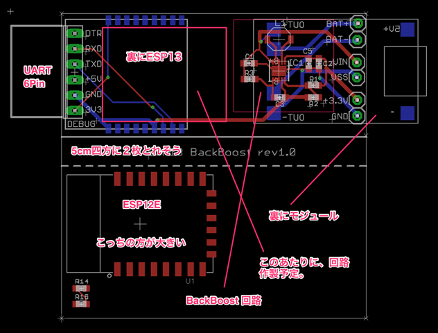
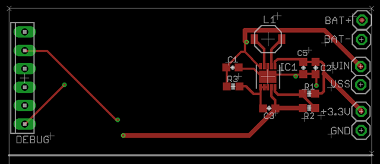
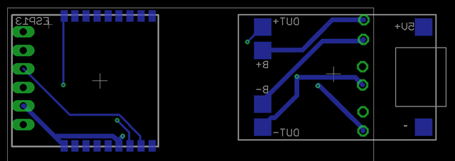
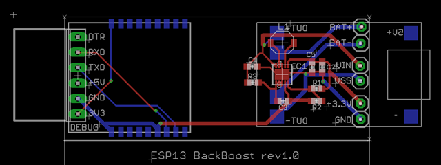
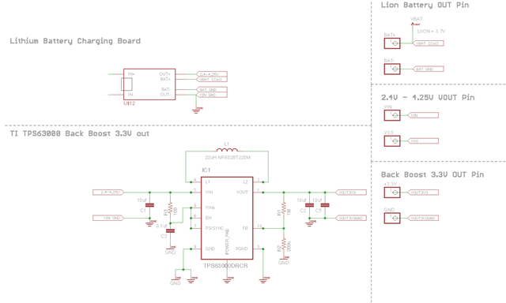

Eagle の勉強と、PCB をプリントに出すため、まずはお手ごろな素材を元に勉強中。
コンセプト
・Lion の1セルに、充電ができて、過充電、過放電保護がある
・充電は、マイクロUSB からできる
・1セルから3.3v を効率よく、安定して作るため、backboost 回路を入れる
・自分が持っている、UART のシリアル変換を直接挿せるようにする
・ケースに入れる都合上、幅を2cm ｘ 6.5cm 未満とする
・UART の PIN は自動的にリセットがかかるよう、DTR からの信号を処理する回路を埋め込む
・バッテリーや、3.3V 出力など後に計測したいので、PINを出しておく
・DeepSleep は必ず使うので、配線しておく
・ブレッドボードに挿せる様、PIN を出しておく
・なるべく安くする
・レゴブロック風のものをジョイントすると機能が拡張できるようにしたい。
といういうな、お題を掲げて作っています。
まだ、途中ですが、以下のようなものができてきました。

安くあげるため、USB と充電回路（保護付き）は既成のモジュールを使うことに、90円くらいのものです。
この基板をノギスや、スキャナで取ってeagle のライブラリを作成。ここが面倒でした。また、ESP12Eと、ESP13（WROOM-02）と大きさを比べると、ESP13の方が小さく、組み込みやすそうです。

今回の目玉である、バックブースト回路は表に載せました。ブレッドボードに指せば裏側に回る予定。真ん中のパッド部分はスルーホールを横に作って、裏側の胴箔に熱伝統させる予定です。

裏面に部品が回せるのを知ったので、（Mirrorすれば良いだけですが、、、）上記のような配置にしました。まだ配線は仮なので、これから変わります。

左には、UARTのPINを直接させるようメスピンヘッダーをつけます。順番は逆配列にしないとブレッドボードに挿した時LEDとか見えませんので、後に変更予定です。

回路図は、離れたところにある配線をどうやるのかわからず、あれこれググりました。これはラベルでやるようですが、いまいち良くわかっていません。とりあず、つなぎたいところに、配線を伸ばしNAMEをつけて、ラベルみたいなのは、シンボルがあったので、それを使っています。supply2.lbr というのにありました。たぶんもっといいやり方があるのでしょうが、良くわかりません。機能は満たしているので、今はこれでよしとします。
先人たちの回路図を見ると、機能ごとに分離して、見やすくする工夫をしているようです。なので上記のような感じにしてみました。その後、あれこれと思案し、以下のようになっています。まだ途中。

ブレッドボードに挿すPINは最低限のものにしたけれども、案外空きスペースがなくなって来ているので、複雑な回路だと2階建てにする感じになりそう。
▼まとめ
・回路図は見やすくするため、機能ごとにわける。
・離れたところを配線するため、NAMEを使い、ラベルをつける
・ラベルは回路図だけに出るライブラリ（supply2.lbr ）があるのでそれを使う
・裏面に部品を配置するには、Mirror を使う。
・実際の部品で仕様がわからないものは、スキャニングして大きさを算出。ノギスで実物を計測。
・独自ライブラリを作るには、３ステップ。
New > Library
Package 作成（左から5番目のアイコン）で、PCB基板に実際に付く図形を書く
Simbol 作成で、回路図上で見える図とPINを書く
Device 作成し、上記を対応づけ。Connect でPIN対応づけできる
・部品の配置の際、ルーラをドキュメントレイヤーに置いておくと便利（Metric ruler のLIB）
▼不明なこと
・離れたとこにある配線のやりかた。見やすいラベルを同時付け、対応づけるには？
・ESP13のUARTでリセットを自動的に行う回路。いろいろあるようです。現在3種類のやり方を模索。モノがまだ来ていないので着たら検討。
・ESP13 と ESP12のピンの対応づけ表がほしい。 EN は CHPD で、TOUTは、ADCに対応していると考えればよい？
・ESP13はGNDが２つ増え、合計３つ。なので、PIN数がESP13の18PINに対し、ESP12は、１６PINということなのか？
▼調査すること
・幅、２ｃｍｘ長さ５ｃｍ、暑さ５ｍｍくらいのお値打ちLIONを探す。
・どっかの記事で、ADCはダイオードをかませば、GPIOのピン数分読めるというような英文記事を見たが、あれは本当か？